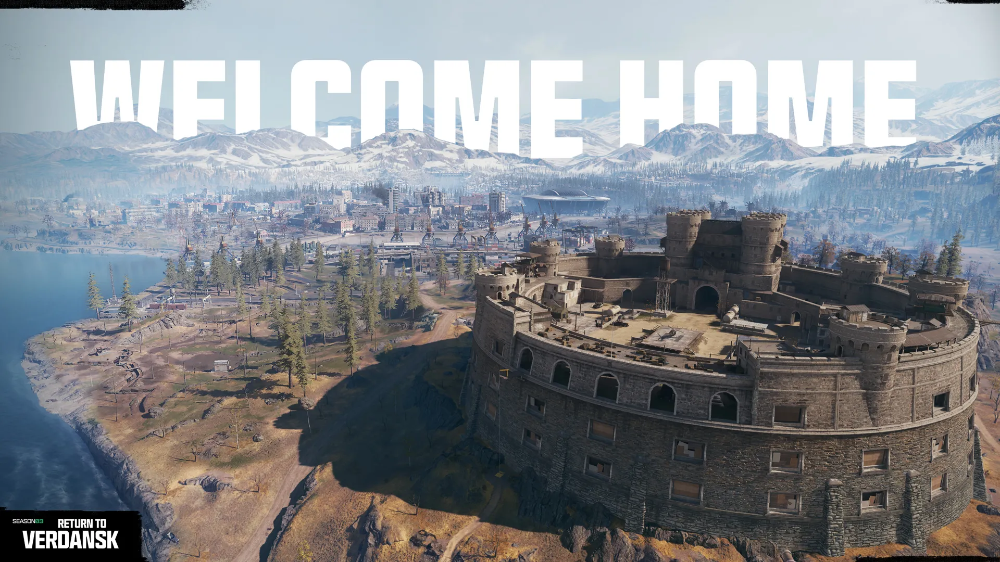

Bem-vindo ao lar
A experiência original de Call of Duty: Warzone Battle Royale retorna com a chegada de Verdansk para os jogadores mergulharem no início da 3ª Temporada! Este é um retorno às raízes iniciais do Battle Royale do jogo, com jogabilidade de volta ao básico, uma reconstrução autêntica do Big Map, juntamente com um número impressionante de melhorias na qualidade de vida.
Certifique-se de pré-carregar o jogo antes do lançamento da 3ª Temporada de Black Ops 6 em 2 de abril, que vem com um Teste Gratuito de 24 horas com todo o conteúdo premium disponível para todos, e o lançamento de Verdansk e Call of Duty: Warzone em 3 de abril!
Reconstruído do zero. Assim como você se lembra
Esta versão de Verdansk foi meticulosamente reconstruída do zero para oferecer a melhor experiência de battle royale possível. Essa experiência equilibra a imersão, a mecânica de movimento ajustada e a jogabilidade característica que você lembra do Call of Duty: Warzone original com um objetivo primordial: reviver o clássico e nostálgico mapa de Verdansk de que todos nos lembramos.

Desde explorar o deserto acidentado das aldeias do norte, Base Militar e Pedreira, até o primeiro pouso na Superloja ou no Hospital, até sobreviver ao seu primeiro Gulag de prisão 1v1, muito trabalho foi feito para tornar Verdansk uma atualização tão exata, detalhada e autêntica quanto possível.
Em termos mais básicos, esta versão de Verdansk é 95% uma versão reconstruída de Verdansk em 2020, com cerca de cinco por cento da paisagem do mapa recebendo ajustes de luz e melhorias na qualidade de vida. Jogadores veteranos que se lembram das temporadas de Modern Warfare 2019 devem pensar em Verdansk na 3ª temporada como o mapa que foi lançado em março de 2020, com alguns elementos das temporadas posteriores do jogo adicionados – como as entradas da estação de metrô – e uma variedade de outras mudanças de mapa programadas para temporadas futuras...